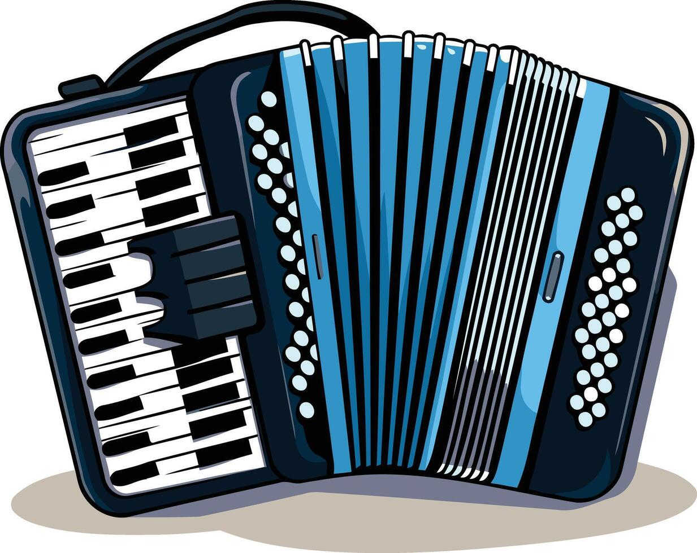

De millón a cero
Kaleth Morales
Todo de Cabeza
Kaleth Morales
Obsesión
Peter Manjarrés
Usa las Flechas ← ↑ → ↓ para moverte
Escuchando: Radio Paradise
Puedes hacer scroll y leerlo directamente.
¡Aprende a tocar el acordeón desde cero! Nuestras clases están diseñadas para todos los niveles.
Contamos con profesores titulados con más de 15 años de experiencia en la enseñanza musical.
Las clases son personalizadas y se adaptan al ritmo de cada alumno.